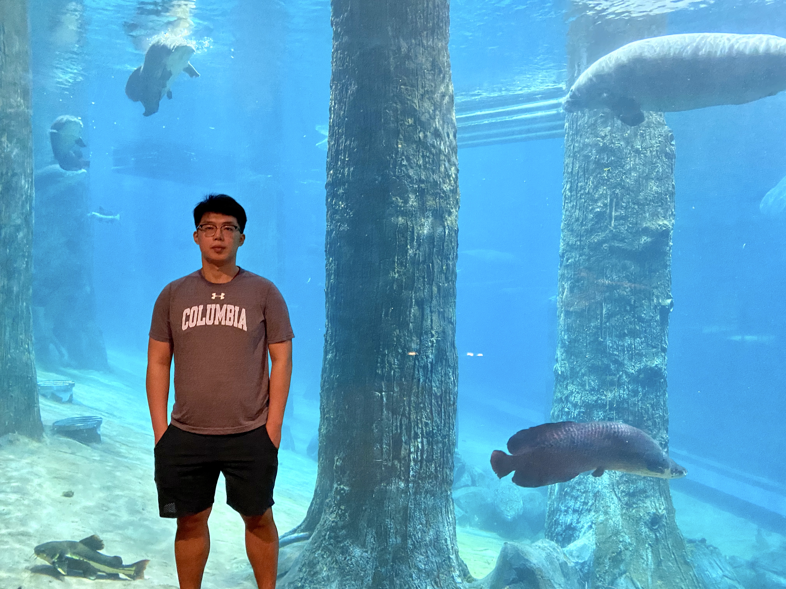

PhD Candiate
NExT++ Research Center
NUS School of Computing
NUS Integrative Sciences and Engineering Programme
Email: lyc071719 at gmail.com
• Google Scholar Page • GitHub Page
Biography
I am a PhD Candiate at NExT++, where I am supervised by Prof Tat-Seng Chua Prof.Chua Tat-Seng and mentored by Mentor: Prof Wang Xiang. With my friends and collaborators, we strive to develop trustworthy deep learning and artificial intelligence algorithms with better interpretability, generalization, and robustness. Our research is motivated by, and contributes to, Multi-modal learning and Video Understandingg.
Collaborators
Always we'comed!Shot me an Email if you are interested.
News
Transformer-Empowered Invariant Grounding for Video Question Answering, Yicong Li, Xiang Wang, Junbin Xiao, Wei Ji, Tat-Seng .
Boosting Causal Discovery via Adaptive Sample Reweighting.
Equivariant and Invariant Grounding for Video Question Answering.
Let invariant Rationale Discovery inspire Graph Contrastive Learning.
Causal Attention for Interpretable and Generalizable Graph Classification.
CrossCBR: Cross-view Contrastive Learning for Bundle Recommendation.
Reinforced Causal Explainer for Graph Neural Networks.
Time-aware Path Reasoning on Knowledge Graph for Recommendation.
TELL: Log Level Suggestions via Modeling Multi-level Code Block Information.
Invariant Grounding for Video Question Answering Yicong Li, Xiang Wang, Junbin Xiao, Wei Ji, Tat-Seng.[Oral Presentation & Best Paper Finalist]
Highlights
Honors and Awards
Background
Supervisor: Prof Tat-Seng Chua; Mentor: Prof Wang Xiang